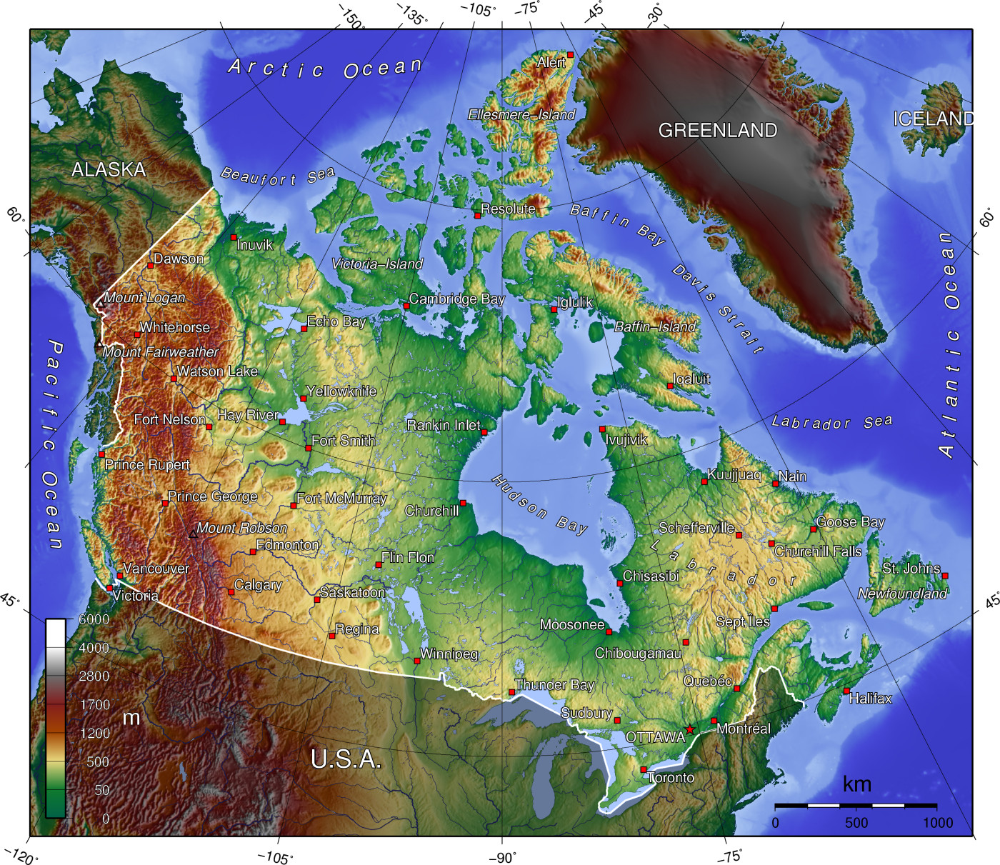
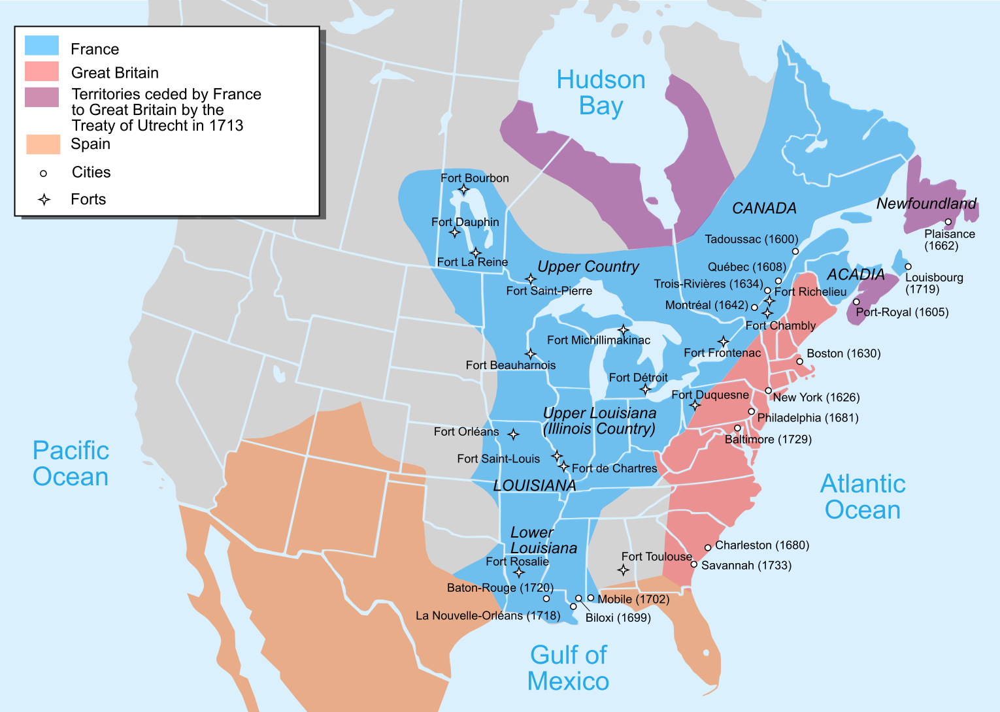
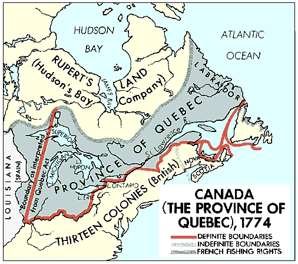
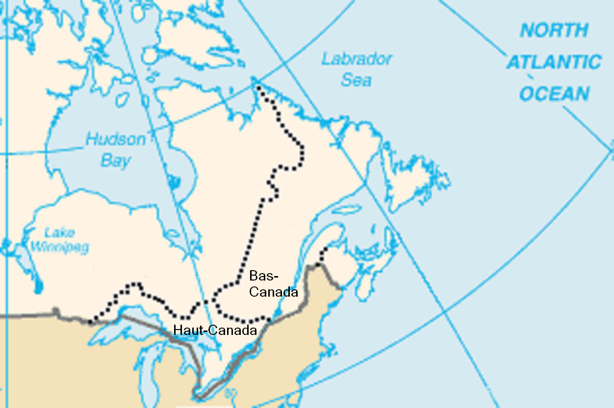
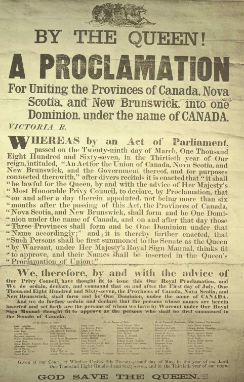
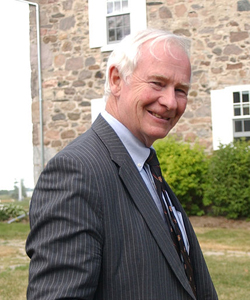
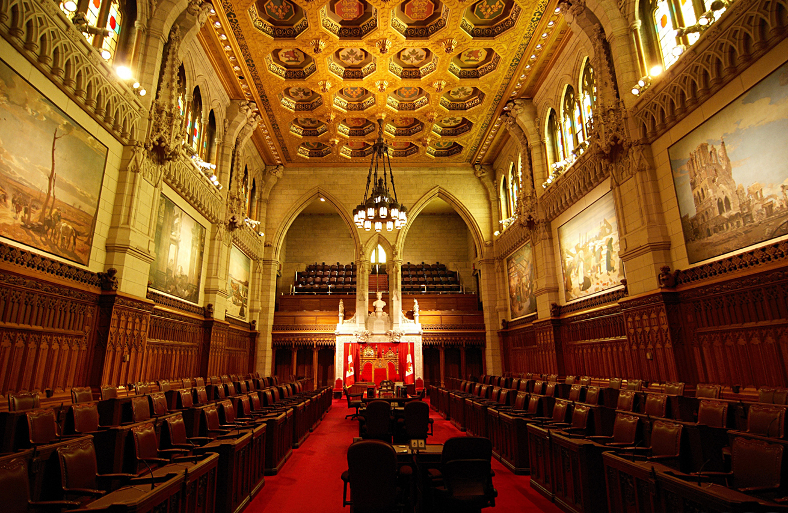
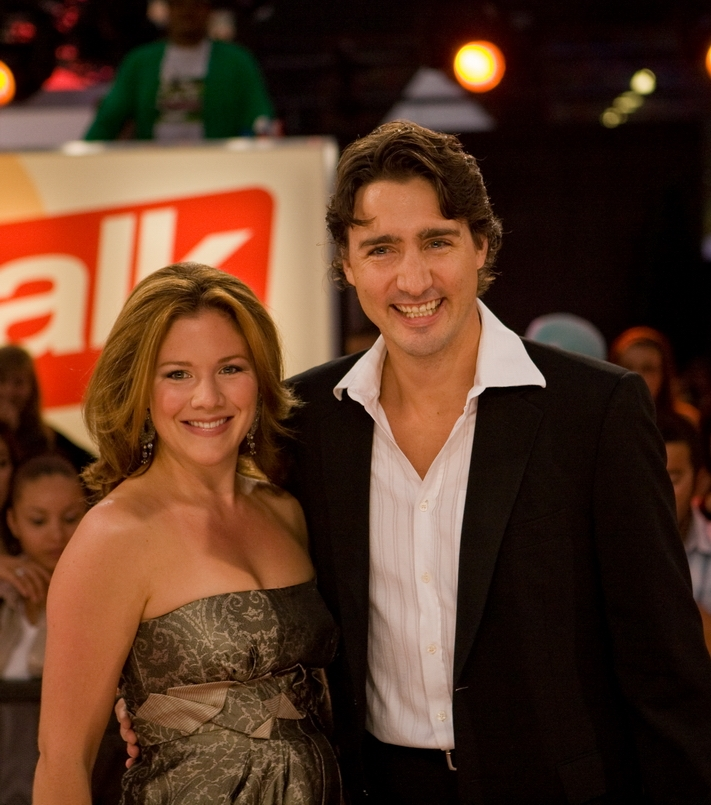
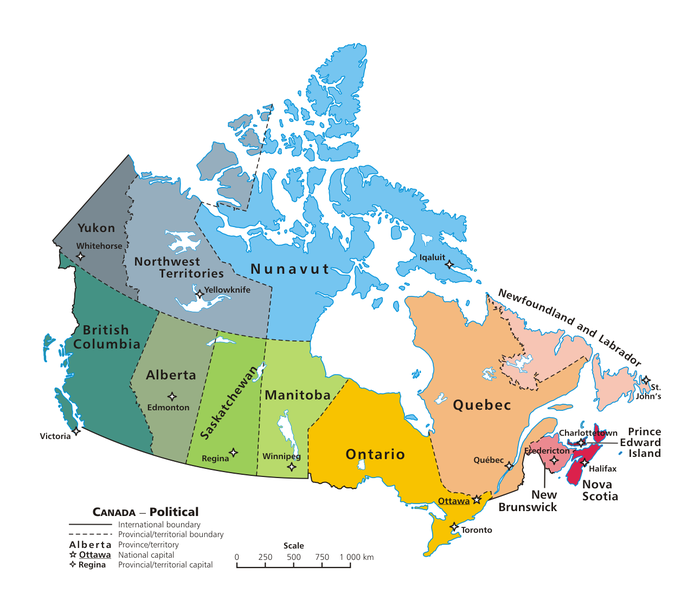

Canada

Dr. Christopher N. Lawrence
Middle Georgia State University
POLS 2301: Comparative Politics
🔇 Disable Narration
Geography
Pre-Columbian History
Sparsely-populated, due to unfavorable climate.
- Southern Canada: First Nations (native American tribes).
- Northern Canada: Inuit (or Eskimos).
Site of first European settlement in the Americas: L'Anse aux Meadows in Newfoundland, circa 1000 A.D.
Perhaps 1/2 million people in Canada circa 1500 A.D.
European Colonization
-

British settlement focused on Newfoundland and Nova Scotia.
French settlement along the St. Lawrence River (known as Canada) and in Acadia: New France.
Seven Years' War/French and Indian War (1754–63) brought all French territory east of the Mississippi River under British control.
Between the Wars (1763–75)
-

Territory reorganized into three colonies: Québec, Prince Edward Island, and an enlarged Nova Scotia.
Quebec Act (1774): Expanded boundaries west and south, entrenched French law and customs.
Lack of an elected assembly angered English-speaking colonists there and in other colonies.
Atlantic colonies saw westward expansion limited.
After U.S. Independence (1783)
-

Québec's southern lands ceded to the United States (became U.S. Northwest Territory).
Many pro-British Loyalists settled in southern Québec, south of the St. Lawrence River and west of the Ottawa River.
Expanding English-speaking population led to split of Nova Scotia (creating New Brunswick) and Québec (creating Upper Canada and Lower Canada).
War of 1812 and Rebellions
U.S. attempt to conquer Canada in War of 1812 fails; most Canadians were loyal to Britain but wanted political reform.
Rebellions in 1837–38 attempt to overthrow colonial governments in both Canadas, demand more accountability to the mass public.
British response: merge Upper and Lower Canada into single Province of Canada (1840), eventual adoption of responsible government (1849).
Confederation
Province of Canada unstable: Francophone/Catholic Canada East and Anglophone/Anglican Canada West had fundamental disagreements.
“Double-majority” rule, equal representation for east and west gave disproportionate power to Canada West.
American expansionism and British indifference to Canadian affairs led colonies to explore union.
Three conferences of colonial leaders agreed to a federal structure with four provinces: Québec (Canada East), Ontario (Canada West), New Brunswick, and Nova Scotia.
Expanding the Confederation
Dominion of Canada established July 1, 1867 (Canada Day).
Lands controlled by the Hudson's Bay Company become the Northwest Territories in 1870.
Three provinces added in 1870s: Manitoba (1870), British Columbia (1871), and Prince Edward Island (1873).
Saskatchewan and Alberta become provinces in 1905.
Newfoundland and Labrador (separate colony since 1583) becomes a province in 1949.
Three territories remain: Northwest Territories (1870), Yukon (1898), and Nunavut (1999).
Canadian independence—when?
1867? British North America Act grants self-government in many, but not all affairs.
Foreign policy remained in hands of UK Parliament.
Example: World War I.
1931? Statute of Westminster repeals ability of British parliament to legislate on most, but not all, Canadian matters w/o consent of Canadian authorities.
1982? UK Canada Act “patriated” the Canadian constitution, allowed amendments without agreement by the British parliament.
Canada's Constitution
-

Constitution Act (BNA Act), 1867
- A “Constitution similar in principle to That of the United Kingdom”
- Parliamentary system with fusion of powers.
- …but federal, rather than unitary, in nature.
Constitution Act, 1982
- Charter of Rights and Freedoms
- Amendment procedures
Unwritten elements
- Constitutional conventions
- Royal prerogative powers
- Principles derived from the (unwritten) UK constitution
Charter of Rights and Freedoms (1982)
Similar rights to U.S. Bill of Rights and Reconstruction Amendments.
Key differences:
Linguistic rights for English-speaking and French-speaking minorities.
Affirmative action programs expressly permitted.
Notwithstanding clause allows Parliament, provincial legislatures to enact laws that contradict Charter guarantees, effective for up to 5 years (renewable).
Canadian Federalism
Unlike U.S. Constitution, original intent was for a stronger national government:
- Federal control of criminal law, all forms of commerce.
- Limited provincial taxation powers.
- Federal, not provincial, reserve powers.
In practice, much more decentralized today:
- Most constitutional changes require consent of provinces.
- Devolution to satisfy Québec, western provinces.
- Sales taxes, federal revenue sharing programs.
Parliament of Canada

The Monarch
The House of Commons
The Senate
The Monarch
-

Executive power nominally vested in the Queen of Canada.
Governor General of Canada (or viceroy) acts on Queen's behalf when not present in Canada.
- Appointed by the Queen on advice of her (Canadian) prime minister.
- Traditionally serves for five years.
- Acts on the advice of the prime minister.
- Current governor general: David Johnston, since 2010.
The House of Commons
Modeled on the British House of Commons
Since 2015 election: 338 members, elected from single member districts (informally ridings).
- Roughly apportioned by population by province.
- Each province has at least as many MPs as Senators.
- Territories have one MP each.
- Serve up to four years; Parliament can be dissolved early due to a no confidence motion or at request of the prime minister.

The Senate
-

No Canadian aristocracy, but represented wealthy nonetheless.
105 seats, apportioned to provinces by constitution.
- Western provinces underrepresented.
- Atlantic provinces overrepresented.
Vacant seats filled by prime minister for life terms; must retire at 75.
Nominally equal in power to Commons; by convention, does not block laws passed by Commons.
Reforming Parliament
The Senate: election or abolition?
The Commons:
- Electoral reform?
- More effective committees, backbenchers?
The Prime Minister and Cabinet
-

Like in most parliamentary systems, prime minister and his/her cabinet is responsible to Parliament.
Current government led by Justin Trudeau of the Liberal Party, PM since November 2015.
Unlike UK, minority governments since World War II have been fairly common due to multiparty system.
Major Political Parties
Conservative Party (Tories): 2004 merger of the former Progressive Conservatives and Reform Party; center-right.
Liberal Party (Grits): traditional “party of government”; centrist/center-left.
New Democratic Party: left-wing party, social democratic orientation.
Bloc Québecois: pro-independence party for Québec.
Most provincial parties are only loosely tied to their federal counterparts.
Provincial Governments
-

Lieutenant Governor: represents the Queen, appointed on advice of federal prime minister.
Unicameral legislatures.
Premier and cabinet responsible to the legislature.
Territorial governments similar; usually less partisan.
Societal divisions
Language and culture: Québec and francophones; First Nations.
Western alienation (versus ON/QC).
Social issues increasingly divisive.
Immigration: assimilation versus multiculturalism.
Secessionism in Québec
Independence referenda failed in 1980, 1995.
Pro-independence Parti Québecois seeks greater devolution of power.
First Nations in northern Québec may want to stay in Canada.
English Canada: viable without Québec?
The 363 kg Gorilla
Living next to [the United States] is in some ways like sleeping with an elephant. No matter how friendly and even-tempered is the beast, if I can call it that, one is affected by every twitch and grunt. — Pierre Trudeau.
Asymmetric relationship: US largely ignores Canada; Canada deeply affected by US policies.
Disputes: fishing rights, trade disputes (softwood lumber), Keystone XL, post-9/11 border security.
NAFTA was controversial; prospect of deeper cooperation (customs union, single market) raises sovereignty fears.
Copyright and License
The text and narration of these slides are an original, creative work, Copyright © 2015–17 Christopher N. Lawrence. You may freely use, modify, and redistribute this slideshow under the terms of the Creative Commons Attribution-Share Alike 4.0 International license. To view a copy of this license, visit http://creativecommons.org/licenses/by-sa/4.0/ or send a letter to Creative Commons, 444 Castro Street, Suite 900, Mountain View, California, 94041, USA.
Other elements of these slides are either in the public domain (either originally or due to lapse in copyright), are U.S. government works not subject to copyright, or were licensed under the Creative Commons Attribution-Share Alike license (or a less restrictive license, the Creative Commons Attribution license) by their original creator.
Works Consulted
The following sources were consulted or used in the production of one or more of these slideshows, in addition to various primary source materials generally cited in-place or otherwise obvious from context throughout; previous editions of these works may have also been used. Any errors or omissions remain the sole responsibility of the author.
- Eugene A. Forsey. 2012. How Canadians Govern Themselves, 8th ed. Ottawa: Library of Parliament, Canada.
- Seymour Martin Lipset. 1990. Continental Divide: The Values and Institutions of the United States and Canada. New York: Routledge.
- Patrick Malcolmson and Richard Myers. 2012. The Canadian Regime: An Introduction to Parliamentary Government in Canada, 5th ed. Toronto: University of Toronto Press.
- Kenneth McRoberts. 1996. Misconceiving Canada: The Struggle for National Unity. Toronto: Oxford University Press.
- David M. Thomas and David N. Biette, eds. 2014. Canada and the United States: Differences that Count, 4th ed. Toronto: University of Toronto Press.
- Michael G. Roskin. 2015. Countries and Concepts: Politics, Geography, Culture, 13th ed. Upper Saddle River, New Jersey: Pearson.
- Various Wikimedia projects, including the Wikimedia Commons, Wikipedia, and Wikisource.